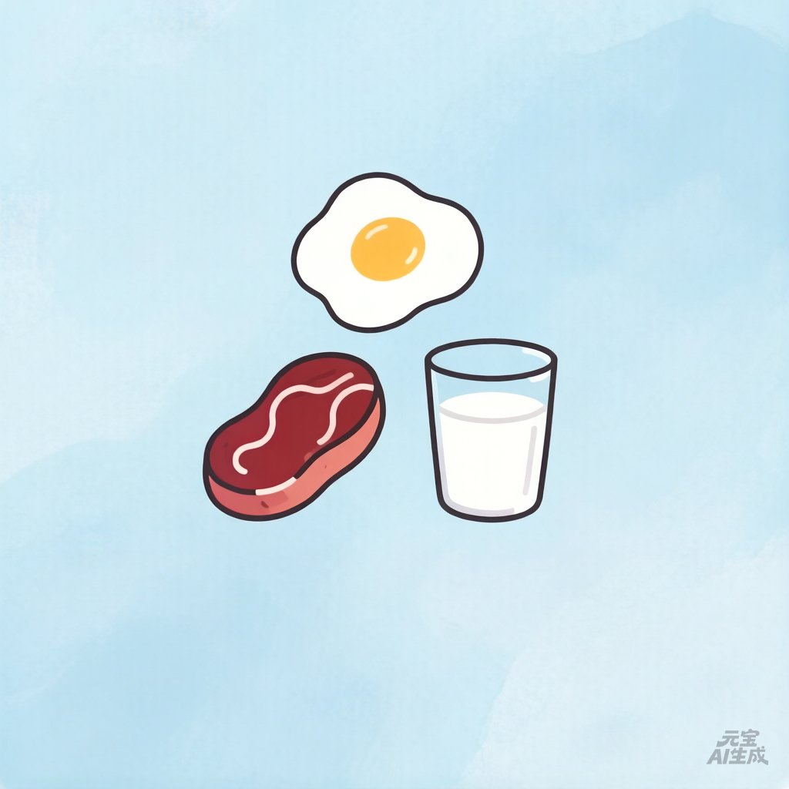

蛋白质日记
先完善你的档案
设置体重、年龄后，才能帮你精准计算每日蛋白质目标。
去设置档案
今日蛋白质
计算中
0%
完成
0
g
目标
—
g / 天
还差
—
g
目标蛋白质
—
g
已摄入
0
g
⭐
🔊
听语音鼓励
去补充蛋白质
今日饮食
+ 添加食物
补充建议
近30天记录
📈 蛋白质摄入趋势
📊 30天统计
我的档案
基本信息
体重 (kg)
年龄
性别
男
女
活动水平
久坐为主
轻度活动
中度活动
高度活动
专业运动
目标
维持体重
减脂
增肌
蛋白质来源偏好
选择你喜欢的食物类型，我会优先推荐这些：
鸡肉
牛肉
猪肉
鱼类
虾贝类
鸡蛋
牛奶/奶制品
豆腐/豆类
蛋白粉
坚果
自定义偏好食物
比如你最爱的某道菜、某品牌蛋白棒，都可以加进来
+ 添加
保存档案
当前档案
每日蛋白质目标：
— g
🏠
今日
📊
历史
👤
我的
记录饮食
✕
按时段记录
全天记录
餐次
早餐
午餐
晚餐
加餐
✨ AI 智能解析
🔍 搜索添加
用自然语言描述你吃了什么，元宝 AI 会自动解析蛋白质含量。
例：早上吃了两个鸡蛋、一杯牛奶200ml，中午吃了鸡胸肉150g和米饭
元宝分析蛋白质 ↗
确认添加到今日记录
重新输入
🔍
食物名称
数量 (g)
蛋白质含量 (g / 100g)
添加自定义食物
手动输入食物